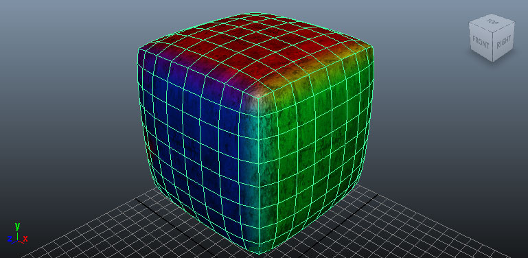
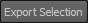
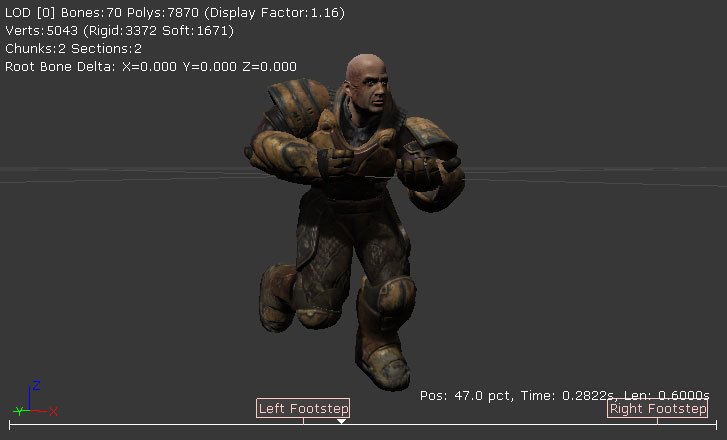
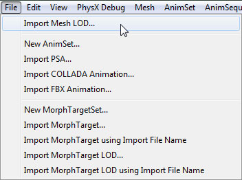

UDN
Search public documentation:
FBXSkeletalMeshPipeline
日本語訳
中国翻译
한국어
Interested in the Unreal Engine?
Visit the Unreal Technology site.
Looking for jobs and company info?
Check out the Epic games site.
Questions about support via UDN?
Contact the UDN Staff
中国翻译
한국어
Interested in the Unreal Engine?
Visit the Unreal Technology site.
Looking for jobs and company info?
Check out the Epic games site.
Questions about support via UDN?
Contact the UDN Staff
UE3 Home > FBX Content Pipeline > FBX Skeletal Mesh Pipeline
UE3 Home > Character Artist > FBX Skeletal Mesh Pipeline
UE3 Home > Character Artist > FBX Skeletal Mesh Pipeline
FBX Skeletal Mesh Pipeline
Overview
- Skeletal Meshes with materials including textures
- Animations
- Morph Targets
- Multiple UV sets
- Smoothing groups
- Vertex colors
- LODs
General Setup
Single Mesh vs Multi-Part Mesh
Skeletal meshes can be comprised of a single, contiguous mesh or they can be made up of several separate meshes all skinned to the same skeleton. Using multiple meshes makes it possible to LOD individual parts differently as well as exporting parts separately for use in modular character systems. There is no performance penalty for creating your skeletal meshes this way. The individual parts are all combined when being imported into Unreal Editor.Rigging
Rigging refers to the binding of a mesh to a skeletal hierarchy of bones/joints. This allows the bones/joints of the underlying skeleton to influence the vertices of the mesh, deforming it as they move.Skeleton
There are various ways to go about creating the skeleton depending on your preference and the 3D application you use. 3dsMax How you go about creating skeletal hierarchies in 3dsmax is up to you. You may use the standard Bones Tools as they work quite well, or create your own hierarchy of objects to allow for completely custom geometry and controls. There are many ways to skin a cat (pardon the pun) and tons of tutorials out there that show how to create animation rigs for game characters. You can also refer to the 3dsMax Help for complete details on how the tools work. Maya In Maya, you will generally use the Joint Tool to create the skeleton for your skeletal mesh. Again, there are endless tutorials on using this tool and creating rigs in Maya. The Maya help is also a good source of information on the subject.Binding
The process for binding a mesh to a skeleton differs depending on which 3D application you use. 3dsMax In 3dsMax, the mesh(es) must be bound to the skeleton using the Skin modifier. The process is the same whether the skeletal mesh consists of a single complete mesh or is made up of multiple mesh parts.- Select the mesh to be bound.
- Add a Skin modifier from the Modifier List.

- In the Parameters rollout of the Skin modifier, click the button to add the bones that will influence the mesh. The Select Bones window will open.
- Select the bones in the Select Bones window and click the
button to add the bones.
- The bones are now displayed in the Bones list of the modifier.
- Now you can adjust the weights of the vertices of the mesh for each bone to determine which vertices are influenced by which bones and to what degree. This can be done using envelopes, directly entering the weights for the vertices, or whichever method you prefer.
- Select the mesh(es) to be bound.
- Shift + Select the root joint of the skeleton.
- Select Smooth Bind from the Skin > Bind Skin menu.
- Now you can adjust the weights of the vertices of the mesh for each joint to determine which vertices are influenced by which bones and to what degree. This can be done using the Paint Skin Wieghts Tool or whichever method you prefer.
Pivot Point
The pivot point of the mesh in Unreal Engine determines the point around which any transformations (translation, rotation, scale) will be performed. The pivot point of a skeletal mesh is always located at the root bone/joint of the skeleton. This means it does not matter where the root of the skeleton is located within the scene. It will be as though it is at the origin (0,0,0) when exporting from a 3D modeling application.Triangulation
Meshes in Unreal Engine must be trinagulated as the graphics hardware only deals with triangles. There are several ways you can ensure your mesh is triangulated.- Model the mesh with only tris - best solution, provides the most control over the end result
- Triangulate the mesh in the 3D app - good solution, allows cleanup and modification before export
- Allow the importer to triangulate the mesh - okay solution, allows no cleanup but can work for simple meshes
- Allow the FBX exporter to triangulate the mesh - okay solution, allows no cleanup but can work for simple meshes

Creating Normal Maps
Normal maps can be created for your meshes directly inside of most modeling applications by creating both a low-res render mesha nd a high-res detail mesh. The geometry of the high-res detail mesh is used to generate the normals for the normal map. See the documentation for your software for details on the exact process for generating the normal map.
The geometry of the high-res detail mesh is used to generate the normals for the normal map. See the documentation for your software for details on the exact process for generating the normal map.
Materials
The materials applied to meshes modeled in external applications will be exported along with the mesh and then imported into UnrealEd. This streamlines the process as textures do not need to beimported separately in Unreal Ed, materials do not need to be created and applied, etc. The import process is capable of performing all of these actions when using the FBX pipeline. These materials also need to be set up in a specific way, especially when the mesh has multiple materials or the order of the materials on the mesh is important (i.e. for character models where material 0 needs to be the body and material 1 needs to be the head). For complete details of setting up materials for export, see the FBX Material Pipeline page.Vertex Colors
Vertex colors (one set only) for skeletal meshes can be transferred using the FBX pipeline. No special setup is necessary. Export Mesh from 3D App
- Select the mesh(es) and bones to be exported in the viewport.
- In the File menu choose Export Selected (or Export All if you want to export everything in the scene regardless of selection).

- Choose the location and name for the FBX file to export the mesh(es) to and click the button.
- Set the appropriate options in the FBX Export dialog and then click the
 button to create the FBX file containing the mesh(es).
button to create the FBX file containing the mesh(es).
- Select the mesh(es) and joints to be exported in the viewport.

- In the File menu choose Export Selection (or Export All if you want to export everything in the scene regardless of selection).

- Choose the location and name for the FBX file to export the mesh(es) to and set the appropriate options in the FBX Export dialog and then click the  button to create the FBX file containing the mesh(es).
Import Mesh
- Click the button in the Content Browser. Navigate to and select the FBX file you want to import in the file browser that opens. Note: you may want to select
 in the dropdown to filter out unwanted files.
in the dropdown to filter out unwanted files.

- Choose the appropriate settings in the Import dialog. The defaults should be sufficient in most cases. See the FBX Import Dialog section for complete details of all of the settings.
- Click the button to import the mesh(es). The resulting mesh, material(s), and texture(s) will be displayed in the Content Browser is the process was successful.
By viewing the imported mesh in the AnimSet Editor, you can determine that the process worked as expected. If you already have compatible animations imported, you can select one and play it to ensure the mesh imported properly

Skeletal Mesh LODs
LOD Setup
General In general, LODs are handled by creating models of varying complexity going from the full-detail base mesh to the lowest-detail LOD mesh. These should all be aligned and occupying the same space with the same pivot point and should all be skinned to the same skeleton. It is also possible for skeletal meshes to be made up of multiple individual meshes within the 3D application. Each of these parts can have LODs independent of the rest of the mesh. This means that some parts can have simplified versions in different LODs while other parts continue to use higher detail versions. Each LOD mesh can have completely different materials assigned, including different amounts of materials. This means the base mesh could use multiple materials to give the desired amount of detail up close, but the lower-detail meshes could use a single material since details will be less noticeable. 3dsMax- Select all of the meshes (base plus LODs - the order is not important) and then select the Group command from the Group menu.

- Enter a name for the new group in the dialog that opens and the click the
 button to create the group.
button to create the group.
- Click the
 button to view the Utilities panel and then choose the Level of Detail utility. Note: You may need to click and select it from the list.
button to view the Utilities panel and then choose the Level of Detail utility. Note: You may need to click and select it from the list.

- With the group selected, click the
 button to create a new LOD Set and add the meshes in the selected group to it. The meshes will automatically be ordered according to their complexity.
button to create a new LOD Set and add the meshes in the selected group to it. The meshes will automatically be ordered according to their complexity.
- Select all of the meshes (base plus LODs) in order from the base LOD down to the last LOD. This is important so that they are added in the correct order in terms of complexity. Then select the Level of Detail > Group command from the Edit menu.

- You should now have the meshes all grouped under the LOD Group.
Multi-Part LODs
Setting up LODs for multi-part skeletal meshes is almost identical to setting up LODs for a full mesh with the exception that each indidual part that has LODs will have an LOD group created for it. The process for setting up those individual LOD groups is identical to the process outlined above.Export LODs
To export the skeletal mesh LODs: 3dsMax- Select the Group(s) of meshes that comprise the LOD Set and the bones to be exported.

- Follow the same export steps used for the base mesh (described above in the Export Mesh section).
- Select the LOD Group(s) and the joints to be exported.
- Follow the same export steps used for the base mesh (described above in the Export Mesh section).
Import LODs
Static Mesh LODs can be imported along with the base mesh in the Content Browser or they can be imported individually through the AnimSet Editor. Mesh with LODs- Click the button in the Content Browser. Navigate to and select the FBX file you want to import in the file browser that opens. Note: you may want to select in the dropdown to filter out unwanted files.
- Choose the appropriate settings in the Import dialog. Make sure that Import LODs is enabled. Note: When importing LODs, the name of the imported mesh will follow the default Naming Rules. See the FBX Import Dialog section for complete details of all of the settings.
- Click the button to import the mesh and LODs. The resulting mesh, material(s), and texture(s) will be displayed in the Content Browser if the process was successful.
By viewing the imported mesh in the AnimSet Editor you can cycle through the LODs using the buttons in the toolbar.
- Open the base mesh in the AnimSet Editor by double-clicking it in the Content Browser or right-clicking and choosing Edit Using AnimSet Viewer.
- In the File menu of the AnimSet Editor, select Import Mesh LOD.
 - Navigate to and select the FBX file containing the LOD meshes in the file browser. Note: You may need to set the file format to
 to see your file.
to see your file.

- In the Import LOD dialog, select the LOD level of the mesh you wish to import from the dropdown menu. Then press the
 to import the LOD mesh.
to import the LOD mesh.
- You will be notified if the import process was successful and the button for the LOD that was imported should be enabled in the toolbar buttons.
- Repeat the process for each LOD mesh you want to import.
- Once all LOD meshes have been imported, you can preview the LOD meshes by using the buttons in the toolbar.
Export to FBX from Unreal Editor
- In the Content Browser, select the SkeletalMesh you want to export.
- Right-click on the SkeletalMesh and choose Export to File.
- Choose a location and name for the file to export in the file browser that appears. Note: make sure FBX File (*.FBX) is selected as the file type.